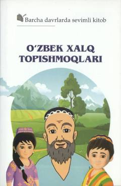

OXO'zbek xalqining boy va qiziqarli topishmoqlari jamlangan to'plam.
Ushbu to'plam o'zbek xalq og'zaki ijodining ajralmas qismi bo'lgan topishmoqlarni o'z ichiga oladi. Kitobda turli mavzulardagi xalq topishmoqlari jamlangan bo'lib, ular o'quvchilarning mantiqiy fikrlash qobiliyatini rivojlantirishga xizmat qiladi.